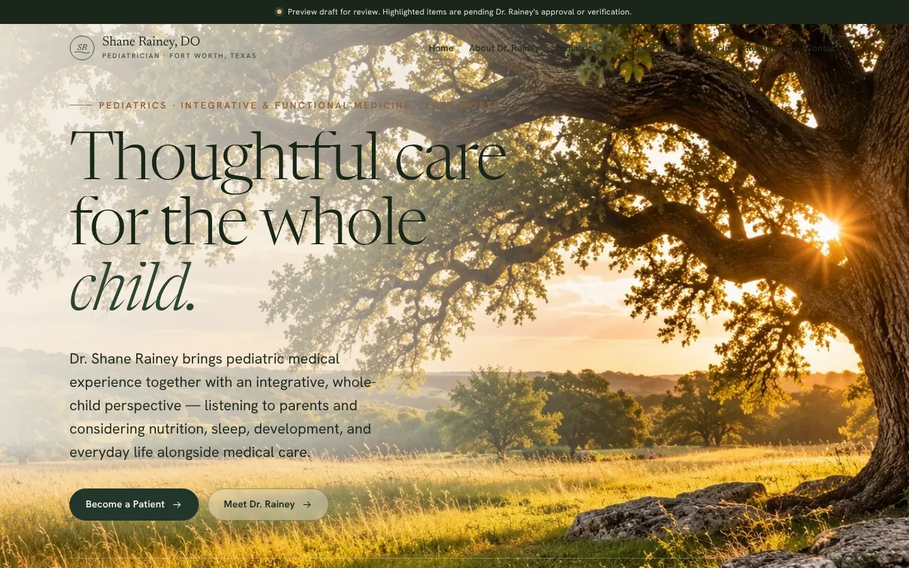
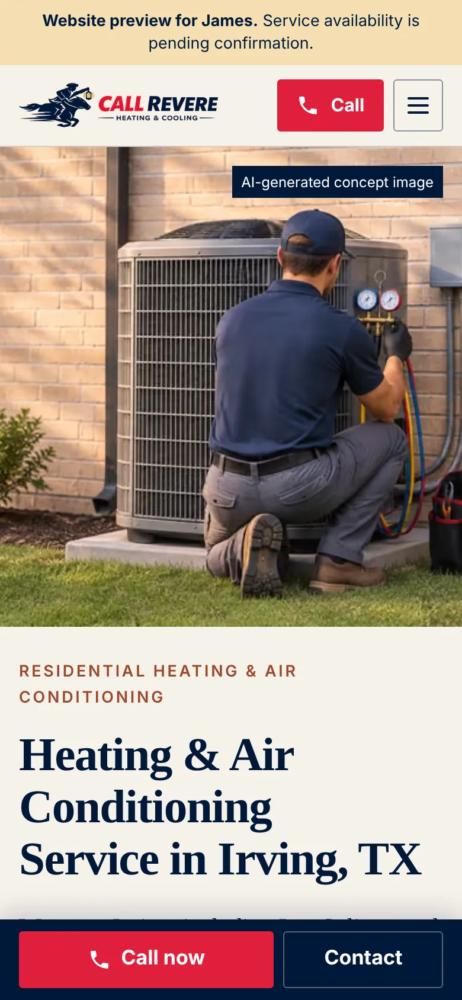
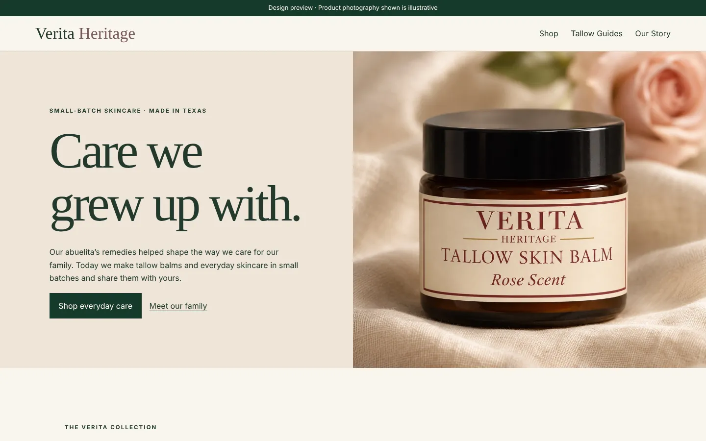

Fort Worth, Texas · Market research · Websites · Search
Research-first marketing for Fort Worth small businesses
Before I recommend a website or a marketing plan, I research how your customers look for what you sell and who they find instead. Then I build the website and the search work around what we learn.
01Featured work
Recent work
A pediatrician, a heating and air company, and a family skincare business. Each one needed something different from its website, so each one looks and works differently. These are previews I've built with the owners; the labels say where each one stands.
-
01 / 03
Shane Rainey, DO
PreviewA calm, editorial website for a Fort Worth pediatrician who looks at the whole child, built so parents can understand his approach and take the next step.


-
02 / 03
Call Revere
Redesign previewA redesign for an Irving heating and air company that connects what is going wrong at home to the right service, the right city, and a phone call.


-
03 / 03
Verita Heritage
Design previewA storefront for a Texas family's small-batch tallow skincare that carries the warmth of their abuelita's remedies into product pages and guides.


02How it’s built
Custom-coded websites built to load fast
I build local business websites with HTML and CSS, and I keep JavaScript to the features that need it. That gives me direct control over what loads on a phone, how the layout holds steady as photos come in, and how a visitor gets from the first page to a call or an inquiry. Your site can still have movement, strong photography, and a design that's clearly yours.
Built for the phone in your customer's hand
Photos are cropped and sized for the screen they appear on, and each one has its space reserved before it arrives, so the text doesn't jump while the page loads.
Motion that never stands in the way
On this site, one small script (about 3 KB compressed) runs the phone menu, the scroll motion in the hero, the featured work, and the process steps, and the inquiry form on the Contact page. If it doesn't run, every page still reads and every link still works. Visitors who turn on reduced motion get a still page.
A site you can take with you
The finished site is a folder of plain files: HTML, CSS, images, and that one script. Any host that serves static files can run it, and your domain points wherever the site lives.
See how the content system works in the Dr. Rainey case study, or read why a better foundation pays off over time.
03Capabilities
What I do
Most small business owners I talk to don't need more marketing. They need to know how customers look for what they sell, and to show up well in those places. The work falls into three parts, and research comes first.
-
Market research
Research into customer demand, local competition, and realistic opportunities for growth, before I recommend a website or a marketing plan.
-
Website development
A fast, distinctive, professionally designed website built around the research: the pages customers look for, in the words they use.
-
Search marketing
Ongoing work to improve how you show up in Google Search and Google Maps: research, new content, website improvements, and your Google Business Profile.
Also Care after launch: hosting oversight, updates, and small changes. About site care
04Process
How we'll work together
You know your business. I know how research, websites, and search work. The five stages are set up so each of us does the part we're good at, and so you always know what comes next.
-
01
Discover
Understand your business, your customers, and what you want to achieve.
-
02
Research
Investigate how customers search for what you offer, and which competitors they find.
-
03
Build
Develop the website around the research, review it together, and launch.
-
04
Grow
Pursue the opportunities the research found, to increase your visibility.
-
05
Measure
Track how people find the business, and identify what to improve next.
05The name
About the name
Rodeo is Fort Worth: the Stockyards, the Stock Show, and the kind of hard-working local business I want to serve. 419 is for Philippians 4:19.
My Catholic faith is the foundation of this business. For me, it means telling you the truth about what I can and can't do, doing the work well when nobody's checking, and treating your business like it matters, because it does.

Tell me about your business
What do you do, who do you do it for, and what's not working about your website or Google listing right now? Start there. I'll tell you honestly whether I can help.